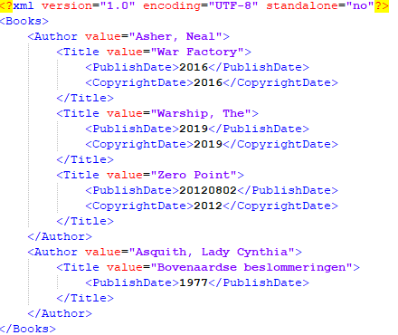

XML Field Definition
An XML file is structured in a tree like fashion. From the root-element, defined in the PDA Database Name field on the
previous screen, elements "sprout" from the root-element like leaves on a tree.
In this screen you can define up to 4 fields to be used as sorted element. Each field you choose here, acts as an container
for the elements to follow. Imagine for example that you are exporting a Books database, a logical element sort order would
then be:
Element 1: Author
Element 2: Series
Element 3: Title
The result would then be something like this:
